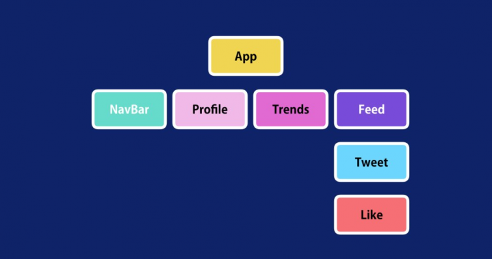

¿Qué es react?
Es una librería open source de JavaScript para desarrollar interfaces de usuario. Fue lanzada en el año 2013 y desarrollada por Facebook, quienes también la mantienen actualmente junto a una comunidad de desarrolladores independientes y compañías.
Por tanto, React representa una base sólida sobre la cual se puede construir casi cualquier cosa con Javascript. Además facilita mucho el desarrollo, ya que nos ofrece muchas cosas ya listas, en las que no necesitamos invertir tiempo de trabajo. En este artículo te ampliaremos esta información, aportando además diversos motivos por los que usar React como librería del lado del cliente.
¿Cuál es el Objetivo de React ?
Sirve para desarrollar aplicaciones web de una manera más ordenada y con menos código que si usas Javascript puro o librerías como jQuery centradas en la manipulación del DOM. Permite que las vistas se asocien con los datos, de modo que si cambian los datos, también cambian las vistas.
React y su Arquitectura
El elemento más importante de React es el componente, que es, en esencia, una pieza de la interfaz de usuario. Como norma general, al diseñar una aplicación con React, lo que estamos haciendo es crear componentes independientes y reusables para, poco a poco, crear interfaces de usuario más complejas.
En ese sentido, React es similar a Angular, ya que toda aplicación en React tiene al menos un componente; al que normalmente nos referimos como componente «raíz», que contiene otros componentes “hijos”, y estos a su vez otros, etc. De esta manera, se puede afirmar que la vista es un árbol de componentes, como se muestra en el siguiente diagrama de ejemplo:
¿Qué es el Virtual DOM?
Es una de las principales características de React. De momento, en líneas generales podemos decir que el virtual DOM es una representación del DOM pero en memoria, que usa React para aumentar sensiblemente el rendimiento de los componentes y aplicaciones front-end.
El Virtual DOM se basa en una idea bastante sencilla e ingeniosa. Básicamente hace que, cuando se actualiza una vista, React se encargue de actualizar el DOM Virtual, que es mucho más rápido que actualizar el DOM del navegador (DOM real). Cuando React compara el DOM Virtual con el DOM del navegador sabe perfectamente qué partes de la página debe actualizar y se ahorra la necesidad de actualizar la vista entera. Es algo muy potente, pero que se hace de manera transparente para el desarrollador, que no necesita intervenir en nada para alcanzar ese mayor rendimiento de la aplicación.
Razones para utilizar React.
- DOM virtual. La principal ventaja de React es poder generar el DOM (“Modelo de Objetos del Documento”, estructura de los elementos que se generan en el navegador web al cargar una página) de forma dinámica. Esto permite que para poder visualizar los cambios de los datos, no es necesario renderizar toda la página de nuevo, sino solamente el componente que haya sido actualizado. Gracias a esta característica mejora: la experiencia de usuario al navegar por la aplicación web, la rapidez en la carga de las páginas y facilita el mantenimiento de la aplicación.
Amplia comunidad.- Al estar basado en JavaScript, cuenta con una amplia comunidad que dispone de un gran número de librerías externas.
- Compuesto por componentes. Como ya hemos mencionado anteriormente, las aplicaciones webs desarrolladas con React están basadas en componentes reutilizables. Esto facilita que la aplicación sea más escalable y fácil de mantener ya que los errores sucederán en la propia funcionalidad del componente o en la comunicación con los demás.
- Isomórfico. Desde el punto de vista del posicionamiento web, el principal problema de los frameworks es que, debido al desacoplamiento entre la parte del cliente y el servidor, los datos que se van a mostrar en el HTML se obtienen mediante peticiones a la API, que es la que suministra los datos desde el servidor y, una vez el framework obtiene los datos, construye el HTML. De esta manera, cuando Google (o cualquier otro buscador) rastrea la web, el contenido del HTML está vacío y no es capaz de interpretar las palabras claves. Esto provoca que el posicionamiento web de un CMS como WordPress sea más óptimo que el de un desarrollo basado en un framework. Sin embargo, gracias al isomorfismo de React, es posible construir el HTML con el contenido ya renderizado y obtener un posicionamiento web tan óptimo como un WordPress.
- Integración con Redux. Al tratarse de una librería, podemos agruparla junto a otras librerías como Redux para conseguir mayor funcionalidad y facilitar el desarrollo. Redux y React encajan muy bien ya que ambos trabajan con estados. Mientras que cada componente React tiene su propio estado (datos de cada componente que se van modificando a lo largo de su ciclo de vida), la función de Redux es emitir actualizaciones de los estados en respuesta a acción
Conclusión:
React es una librería completa, adecuada en muchos tipos de proyectos distintos. Nos permite un desarrollo ágil, ordenado y con una arquitectura mantenible, focalizada en componentes y que nos ofrece un gran performance. Aunque React no se encarga de todas las partes necesarias para hacer una aplicación web compleja, la serie de componentes y herramientas diversas que encontramos dentro del ecosistema React, nos permite beneficiarnos de alternativas capaces de desarrollar cualquier cosa que podríamos hacer con un complejo framework.